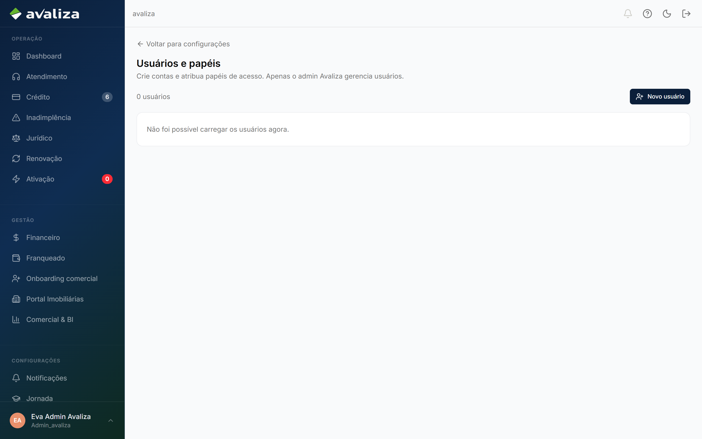
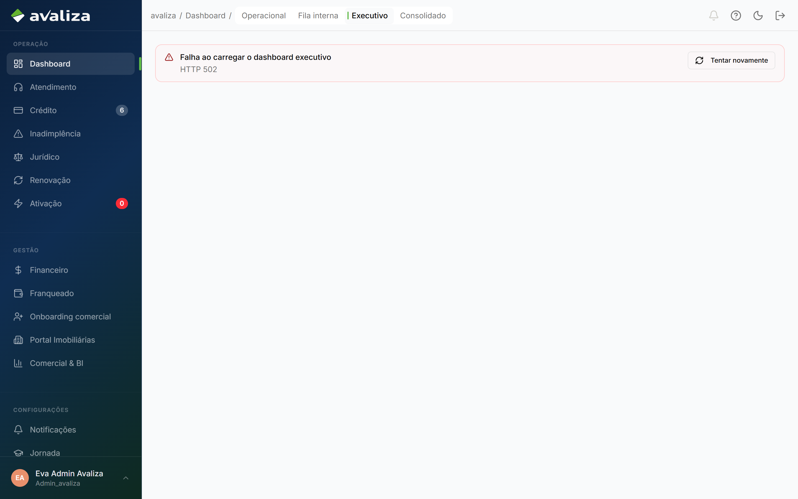
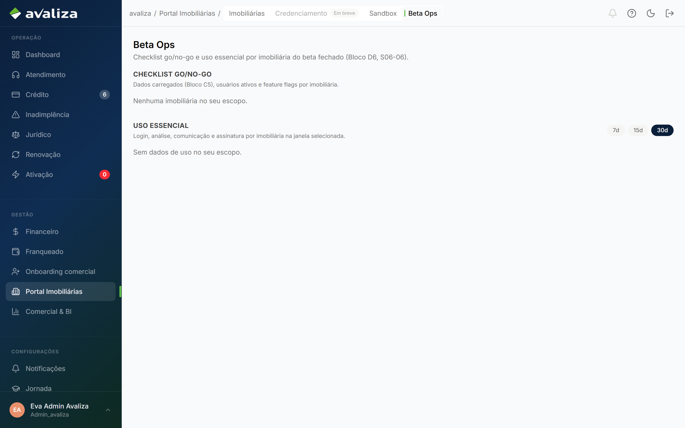
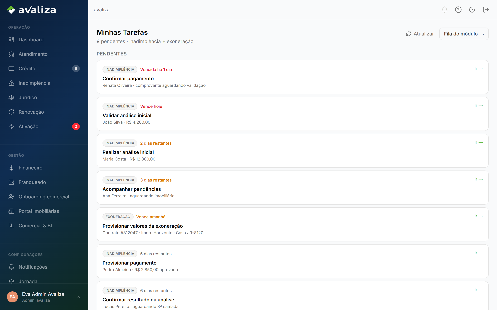
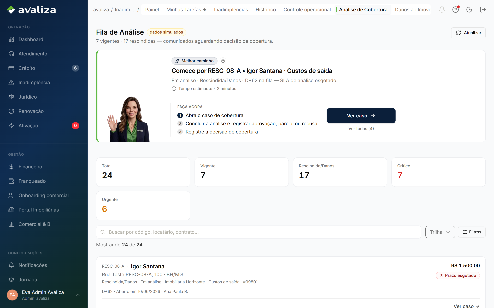
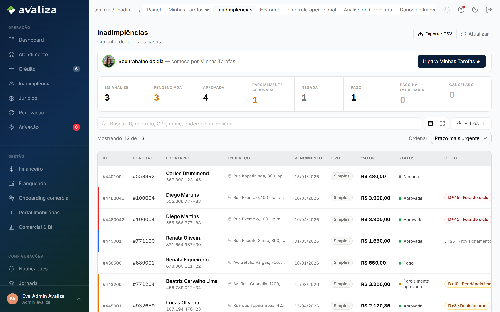
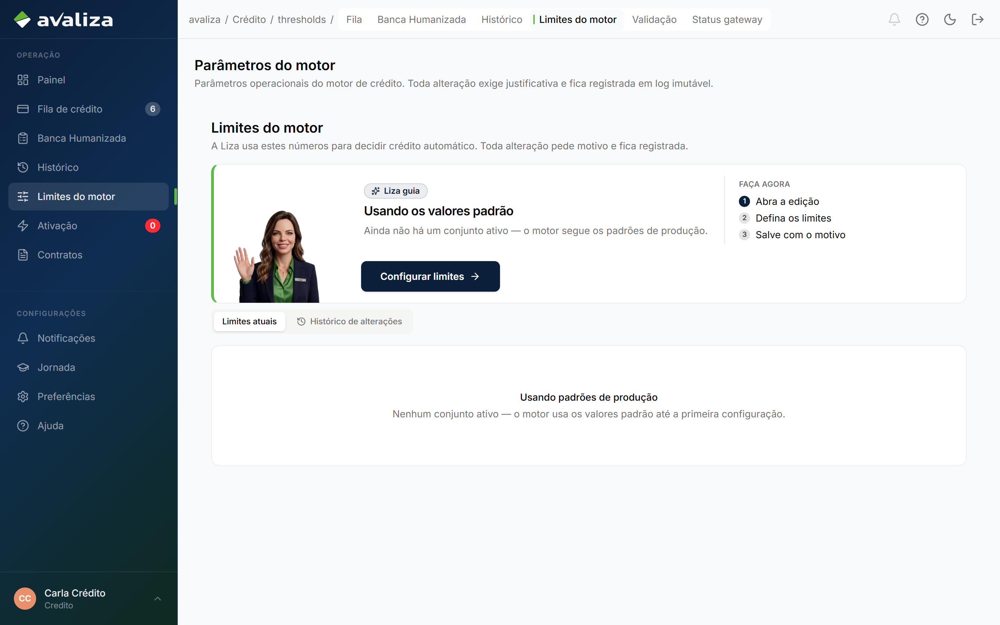

Documento para o responsável · Admin Avaliza
Para: Admin Avaliza
Admin Avaliza
Governança: IAM, dashboards, beta, pool global de tarefas. Não opera fila operacional. Participa da baixa de indenização como backup do financeiro.
O que vocês fazem
O trabalho no produto, na ordem em que costuma aparecer no dia. Tela é evidência; não é etapa de um tour.
-
Gerir usuários e papéis
IAM. Não é operação de garantia.
/configuracoes/usuarios
/configuracoes/usuarios -
Ler dashboards de governança
Executivo, fila interna, consolidado. Ver tudo não é fazer a fila.
/dashboard/executivo
/dashboard/executivo -
Operar o beta
Go/no-go das lojas no beta.
/imobiliarias/beta-ops
/imobiliarias/beta-ops -
Ver o pool global de tarefas
Legado. Só admin.
/tarefas
/tarefas -
Auditar a fila de análise de IN
/inadimplencia/analise é auditoria. O analista trabalha por Minhas Tarefas.
/inadimplencia/analise
/inadimplencia/analise -
Dar baixa de indenização (backup)
Mesma superfície do financeiro. Mérito já acabou.
Baixa de indenização ·
/inadimplencia
/inadimplencia
Ciclos que vocês fecham
Jornadas cujo resultado é deste setor. Fronteira, não o passo a passo acima.
Este setor não é dono de nenhum ciclo do grafo. A responsabilidade está nas participações e nas capacidades abaixo.
Ciclos em que só aparecem
Participam da operação. Quem fecha o ciclo é outro setor.
participa · dono: Financeiro Baixa de indenização Cobertura já aprovada, valor a pagar. Financeiro não reabre mérito.Isto não é de vocês
Confusão típica deste time. O dono está no link.
- Banca humanizada — dono: Crédito. Ver a fila de crédito no admin não é decidir no dossiê do analista de crédito.
- Analisar cobertura — dono: Inadimplência. /inadimplencia/analise no admin é auditoria. O analista trabalha por Minhas Tarefas.
Recebem de
- Nenhum setor é obrigado a disparar os ciclos de vocês.
Passam para
- Os ciclos de vocês não disparam outra jornada. O resultado fica aqui.
Capacidades do shell (não são jornadas)
Menu e leitura. Não fecham ciclo — mas são as telas que o time abre no dia a dia além do trabalho acima.
-
Painel operacional
Ponto de partida do dia, não um ciclo de negócio.
/dashboard
/dashboard -
Limites do motor
Governança do parâmetro — muda as próximas análises.
/credito/thresholds
/credito/thresholds -
Análise de cobertura (admin)
Auditoria. O analista trabalha por Minhas Tarefas.
/inadimplencia/analise/inadimplencia/analise -
Carteira / funil / visão estratégica
Leitura. Aprovar cadastro é a jornada de onboarding.
/relatorios
/relatorios -
Portal Imobiliárias
Módulo em desenvolvimento — não há jornada de ficha/saúde/treino.
/imobiliarias
/imobiliarias -
Developer Hub
Docs de API.
/developers
/developers -
Dashboards admin (fila interna, executivo, consolidado)
Governança. Ver tudo não é fazer a fila.
/dashboard/executivo/dashboard/executivo -
Usuários e papéis
IAM, não operação de garantia.
/configuracoes/usuarios/configuracoes/usuarios -
Beta Ops
Go/no-go do beta.
/imobiliarias/beta-ops/imobiliarias/beta-ops -
Tarefas globais
Pool legado — só admin.
/tarefas/tarefas